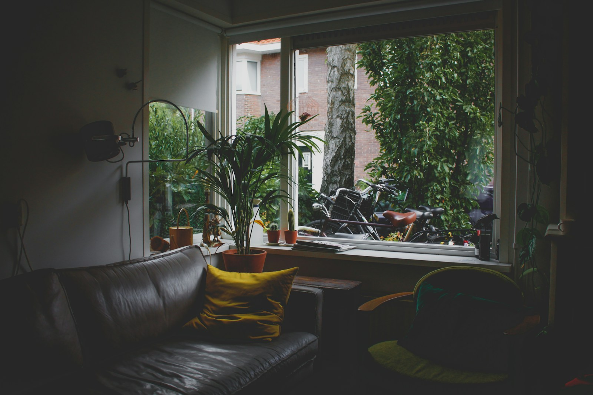

KRALINGEN, ROTTERDAM
3-bedroom apartment
€2,250/ month, excluding bills
3 bedrooms92 m²Available OctoberSharing allowed
On your own€2,250 over budget
→With 2 roommates€750 each / month
ROOMMATE SEARCH
Review suggested roommates, rent shares and rental requirements.

KRALINGEN, ROTTERDAM
Each round is calculated. The selected population enters in 12 batches. Both markets receive the same people in the same order and begin with identical copies of 100 homes. Unmatched seekers stay in the pool. Assigned people and homes leave the available pool.
Two matching rules. Both markets allow solo rentals and occasional self-organized groups. Each round has a 25% seeded chance of one informal group-search opportunity in each market; a group forms only if all requirements are met. This is an illustrative assumption, not a measured success rate. The feature additionally searches systematically for compatible groups in the remaining pool. Budget, location, moving month, landlord requirements and mutual roommate preferences must fit. Groups split the rent equally.
Controlled fictional data. Profiles and homes are fixed, so replaying the same population gives the same outcome. Results are not hardcoded. Each branch evolves separately; early allocations affect later opportunities. This is a simple greedy search, not an optimal allocation.
Model boundaries. Mutual acceptance is assumed. Matched homes are reserved within the simulation, not actually rented. No withdrawals, new listings or real elapsed days are modelled. Income and guarantor rules are fictional. This tests a mechanism, not real-world demand or acceptance.